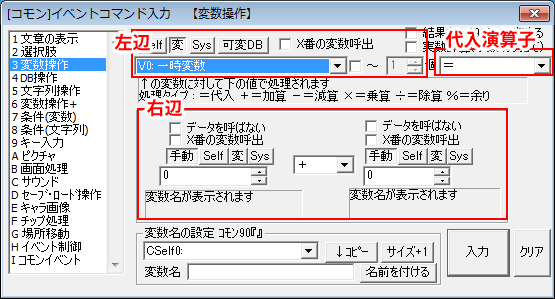

【計算式の説明 ・ 変数文字について】
【計算式の説明】
ここではイベントコマンド各所で見られる、計算式の代入演算子について説明します。まず用語として、代入先を「左辺」、代入方法を「代入演算子」、代入する値を「右辺」と呼びます、イベントコマンド「変数操作」ではそれぞれ以下の部分に対応します。

※計算の注意点：
WOLF RPGエディターでは処理高速化のため、「コモンイベント」中の変数操作では数値の限界値処理をしていません。
それでどうなるかというと、たとえば数値を足していって2,147,483,648の限界値を超えると、オーバーフローして
数値が-2,147,483,647になってしまうのです。
コモンイベント中では、±20億を超えない組み方を行ってください。マップイベント中ではこの問題は起きません。
→ なお、変数操作のどれかのチェックボックスに1つでもチェックが入っていたり、数値・セルフ変数・通常変数以外の
変数を使用した場合はこの「高速化」が行われないため、上下限は±20億までになります。
【代入演算子について】
| （代入先） |
（代入演算子） |
（代入する値） |
| 左辺 |
＝ |
右辺 |
|
| 代入演算子 |
別名 |
意味 |
| ＝ |
代入 |
右辺を左辺にそのまま入れる |
| ＋＝ |
加算 |
左辺の値に右辺を足す |
| －＝ |
減算 |
左辺の値から右辺を減らす |
| ＊＝ |
乗算 |
左辺の値に右辺を掛ける |
| /＝ |
除算 |
左辺の値を右辺で割る。
0で割った場合は数値は変化しません(÷1扱いになる) |
| ％＝ |
剰余 |
左辺を右辺で割り算し、その余りを左辺に代入 |
| 引上げ |
|
左辺より右辺が大きい場合、左辺に右辺を代入。 |
| 引下げ |
|
左辺より右辺が小さい場合、左辺に右辺を代入。 |
| 絶対値 |
|
右辺の値がマイナスならプラスに置き変えて左辺に代入
右辺の値がプラスなら何もしない |
|
また「変数操作」コマンドに限り、以下の4つの代入演算子が使用可能です
|
| 代入演算子 |
別名 |
意味 |
| 角度x10←傾き |
arctan
atan |
右辺の2変数がXベクトル、Yベクトルになります。
傾きのX､Yベクトルを右辺の各々に格納すると、左辺に
その「傾きの角度（°）」x10倍の値が代入されます。
（なお、Xベクトルは右方向が+、Yベクトルは下方向が+です） |
| sin[x1000]←角度x10 |
sin |
右辺に角度の10倍の値を指定すると、左辺に
「その角度のsin値」x1000倍の値が代入されます。
（例： 右辺が600[60°]なら、左辺には
866[sin60°=（√3）/2=0.866]が格納される） |
| cos[x1000]←角度x10 |
cos |
右辺に角度の10倍の値を指定すると、左辺に
「その角度のcos値」の1000倍の値が代入されます。
（例： 右辺が600[60°]なら、左辺には
500[cos60°=0.5]が格納される） |
√[x1000]
(Ver3.50以降) |
ルート |
右辺のルート値を1000倍にした値が左辺に代入されます。
(例：右辺が「5」の場合、左辺に「2236」が代入されます) |
|
また、変数操作の右辺の両値をつなぐ演算子にしかない、特殊な処理が4つあります。
|
| 演算子 |
別名 |
意味 |
| ビット積 |
論理積
(&) |
右辺の2つの数値をビットに直したとき、そのビットの積を取ります。
（例：5(101)と3(011)のビット積を取ると、1(001)になります） |
| ビット和 |
論理和
(|) |
右辺の2つの数値をビットに直したとき、そのビットの和を取ります。
例：5(101)と3(011)のビット和を取ると、7(111)になります） |
排他ビット
(Ver3.50以降) |
排他的
論理和
(XOR)
(^) |
右辺の2つの数値の排他的論理和(XOR)を取ります。
(例：5(101)と3(011)の排他ビットを取ると6(110)になります) |
ビットシフト<<
(Ver3.50以降) |
<< |
右辺の「左の数値」のビットを右辺の「右の数値」分だけ左にシフトします。
「右の数値」にマイナスの値を入れると右シフトになります。
(例：5(101)を2ビットシフトすると20(10100)になります。
5(101)を-2ビットシフトすると1(1、下2ビットが消える)になります) |
| ～ |
乱数 |
右辺の両値の範囲で、ランダムな値を取ります。
3～6なら、3、4、5、6のうちどれかの値を取ることになります。 |
|
【変数文字について】
WOLF RPGエディター内の一部では、変数をアルファベットの略称で記載しています（例：V1＝CSelf1 + 5 など）。
ここではそれら変数文字を紹介します。なお、変数文字の「?」には数値が入ります。
|
| 変数文字 |
タイプ |
意味 |
| V? |
数値 |
?番の通常変数 |
| V?-? |
数値 |
予備変数?-?番 |
| S? |
文字列 |
文字列変数?番 |
| Self? |
数値 |
（マップイベントの）セルフ変数?番 |
| CSelf? |
数値/文字列 |
コモンセルフ変数?番
5～9番のみ文字列、それ以外は数値 |
| Sys? |
数値 |
システム変数?番 |
| SysS? |
文字列 |
システム文字列?番 |
|